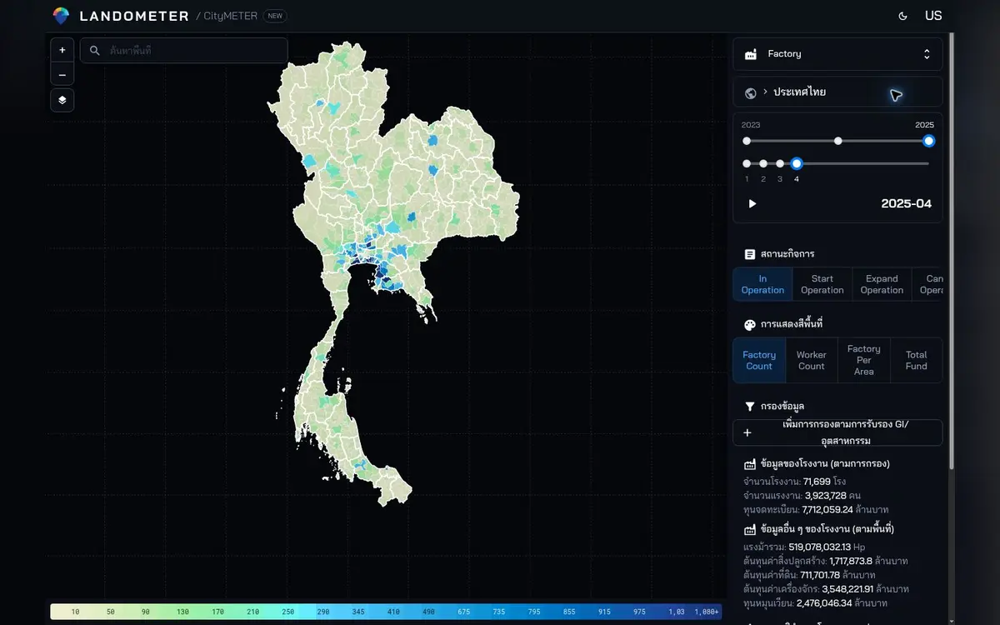

CityMETER · Location
Factories, Workers & Investment
Explore an area’s industrial base through recorded factories, workforce and investment figures.
Open the map ↗
Read factories as part of a local business network
Factory types and locations help frame questions about suppliers, services and field research. Compare figures with matching units and reference periods.
Registry figures need their definitions and operating status confirmed before being used as current production capacity or employment.
Two questions to start with
- Which factory types shape the area’s industrial base?
- Which clusters deserve closer market research?
Explore the area on the map
Shortlist relevant areas and factories, then confirm their status with the source records.
Read further at the source
References, dates and data coverage
Related reference — exact data release not confirmed
- Data publisher
- Office of the Permanent Secretary, Ministry of Industry — statistical reference; Department of Industrial Works — related factory register
- Source
- The inspected reference points to the Office of the Permanent Secretary, Ministry of Industry. Department of Industrial Works data is a related source; an exact match to the displayed database is not established.
- Data period
- The view identifies April 2025; check the reference date of each measure before comparison.
- Coverage
- A Thailand summary view is visible; source coverage is not stated
- Level of detail
- Factory records with reported status, workforce, capital or machinery measures
When comparing or citing the data
Definitions, source, and registry coverage are not yet documented on the public page
Contributors

Scan to open this data in CityMETEROpen the map (opens a new tab)
Share this summary
Send it to someone exploring the same question